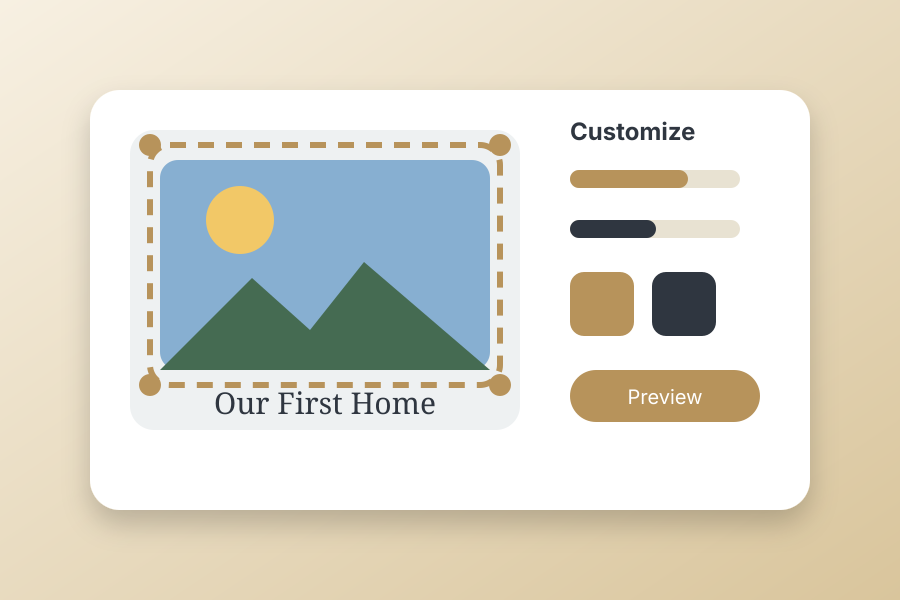

In a world of mass-produced items, custom photo magnets offer a refreshing opportunity to express your individual creativity and personality. Whether you are looking to create a one-of-a-kind gift, establish a unique brand presence in your office, or simply celebrate the moments and people that matter most to you, custom photo magnets provide the perfect medium. The ability to control every aspect of your magnet design, from the photograph itself to added graphics, text, and finish options, puts creative power directly in your hands.

The Art of Personalization: Making Magnets Uniquely Yours
Custom photo magnets represent more than just displaying a photograph on a magnetic surface. They are about telling a story, capturing a mood, or communicating a message that reflects who you are. When you design custom magnets, you are not constrained by pre-made collections or standard formats. Instead, you have complete freedom to choose your images, incorporate personal touches, and create something that truly resonates with your vision.
The personalization process has become increasingly accessible thanks to user-friendly design tools that do not require any professional graphics experience. Whether you upload a single photo or create a collage incorporating multiple images, modern customization platforms guide you through each step with intuitive interfaces and real-time previews that show exactly what your final product will look like. For a broader buying guide, explore our photo magnets collection.
Design Options That Match Your Vision
When creating custom photo magnets, you will discover numerous design possibilities that can transform your basic photograph into a truly special piece. Color filters and adjustments allow you to enhance the original image, adjust brightness and contrast, or even apply artistic effects that give your photos a unique aesthetic. Whether you prefer vibrant, saturated colors or soft, muted tones, the ability to modify your image directly impacts the final look and feel of your magnet.
Text customization adds another layer of personalization. Add meaningful dates, inspiring quotes, funny captions, or names directly to your magnets. Choose from various fonts, sizes, and colors that complement your photograph. This feature is particularly popular for creating magnets that commemorate special occasions, like wedding dates, baby announcements, or anniversary celebrations. It transforms a beautiful photo into a meaningful keepsake that celebrates a specific moment in time.
Layout and Format Flexibility
Custom photo magnets are not limited to single images. Modern design tools allow you to create sophisticated layouts with multiple photos arranged in artistic configurations. Create grid layouts featuring different moments from a vacation, arrange chronological sequences showing a child's growth, or design artistic collages that blend multiple perspectives of the same subject. These layout options elevate custom magnets from simple photo displays to carefully curated visual narratives.
Shape options have also expanded beyond traditional rectangles. Circular magnets create bold, focal-point displays. Square formats offer modern versatility. Some services offer custom-shaped magnets that follow the contours of your image, allowing a portrait magnet to have the outline of a person's silhouette, for example. These unique shapes add a premium feel and make your custom magnets truly distinctive. These make incredible fridge magnets for modern kitchens.
The Perfect Gift That Shows You Care
Perhaps the most compelling reason to create custom photo magnets is their value as personalized gifts. When you give someone a custom magnet featuring a shared memory, you are offering something infinitely more meaningful than a store-bought item. You are giving them a daily reminder of a cherished moment, relationship, or milestone.
New parents appreciate custom magnets featuring their newborn's first photos. Long-distance friends treasure magnets with images of memorable times spent together. Grandparents display magnets featuring their grandchildren prominently on their refrigerators. Corporate clients appreciate custom magnets with company branding and team photos. In each case, the personalization elevates the gift from simple to sentimental, from forgettable to treasured. These customized gifts can also act as beautiful memory magnets, capturing family milestones and vacation highlights.
Professional Applications for Business and Marketing
Beyond personal use, custom photo magnets serve important marketing and branding purposes for businesses. Real estate agents include their photo and contact information on magnets featuring stunning property images, creating useful takeaways that remain visible on client refrigerators for months. Wedding photographers include sample portfolio images on magnets as marketing tools. Small businesses use photo magnets as promotional giveaways that build brand awareness and keep their company top-of-mind.
Custom magnets with product photography create mini-advertisements that customers will literally stick to their refrigerators and see multiple times daily. This repeated exposure builds brand recognition far more effectively than traditional advertising channels. The fact that magnets are practical, meaning they actually serve a purpose by holding papers in place, means customers are more likely to keep and display them.
Quality Considerations for Custom Designs
When ordering custom photo magnets, image quality directly impacts the final product. High-resolution photographs produce crisp, detailed magnets, while low-resolution images may appear pixelated or blurry. Most custom magnet providers recommend images with at least 300 DPI for optimal print quality. Taking the time to select or capture high-quality source images ensures your custom magnets showcase your photos beautifully.
The printing method also affects results. Premium providers use professional-grade printing equipment that captures color accuracy and detail far superior to standard printing. Fade-resistant inks ensure that your custom designs maintain their vibrant appearance even after prolonged exposure to sunlight and environmental factors.
Tips for Creating Stunning Custom Magnets
Start by selecting photos that have strong composition, good lighting, and clear subjects. Images with interesting colors or meaningful moments create more impactful magnets than technically perfect but uninspiring photos. Consider your display space and how the magnet will look among other items. Custom magnets displayed on office file cabinets might benefit from more professional imagery, while refrigerator displays can accommodate casual, playful family photos.
Take advantage of preview features before finalizing your order. Seeing a digital representation of your custom magnet before it goes to print allows you to make adjustments to text placement, color settings, or layout elements. Most providers offer unlimited preview revisions, so do not hesitate to experiment until you are completely satisfied with the design.
Finally, remember that simplicity often yields the best results. A clean, uncluttered photo with a single line of well-placed text is usually more visually appealing than a busy collage crammed with elements. Trust your creative instincts and have fun with the process.
Conclusion
Custom photo magnets empower you to create personalized displays that tell your unique story. Whether for personal enjoyment, thoughtful gift-giving, or professional marketing purposes, the ability to design exactly what you envision, from image selection to text, colors, and layout, makes custom magnets an unparalleled choice. In a world where personalization matters increasingly to consumers and gift recipients alike, custom photo magnets offer a meaningful way to stand out and create lasting impressions.
Start Creating Your Custom Photo Magnets Today
Use our intuitive design tools to bring your vision to life.
Design Now